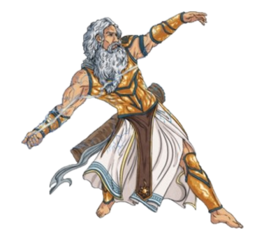
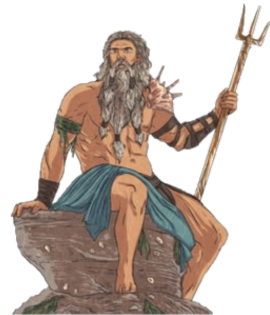
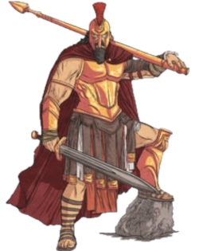
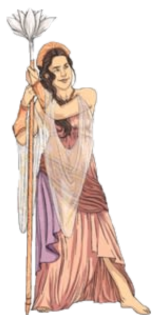

DIOSES GRIEGOS MAS IMPORTANTES
|  |
Zeus era el más poderoso de los dioses griegos.
Como dios del cielo y rey del Olimpo, su temperamento afectaba el clima. Zeus también gobernaba sobre todos los demás dioses y diosas, por lo que fue adorado en la mayoría de los antiguos hogares griegos a través de altares, santuarios y ofrendas diarias. Zeus tenía el poder de cambiar su forma y también estaba casado con la reina de los dioses, Hera. |
| 
|
Poseidón: dios griego del mar
Como dios del mar y hermano de Zeus, Poseidón fue uno de los dioses griegos más poderosos. Al igual que Zeus, el temperamento de Poseidón controlaba los mares, por lo que los marineros le rezaban antes de los viajes para garantizar un paso seguro.
|
|  |
Ares: dios griego de la guerra
Hijo de Zeus y Hera, Ares era el dios de la guerra. Era un dios cruel, por lo que sus padres no querían a Ares y no era adorado en la misma medida que otros dioses griegos. Sus símbolos sagrados incluían el perro y el buitre. Ares solía llevar una lanza ensangrentada.
|
|  |
Hera: diosa griega de las mujeres, el matrimonio y la reina de los dioses
Esposa de Zeus, Hera era la reina de los dioses griegos y también la diosa del matrimonio, las mujeres, las familias y el nacimiento, actuando como su protectora. Sin embargo, se sabía que Hera era una diosa vengativa y que se desquitaría con los mortales por sus celos de otras diosas. El animal sagrado de Hera era un pavo real, dos pavos reales tiran de su carro cuando la representaban en imagen. |
-REGRESAR A LA PAGINA PRINCIPAL-